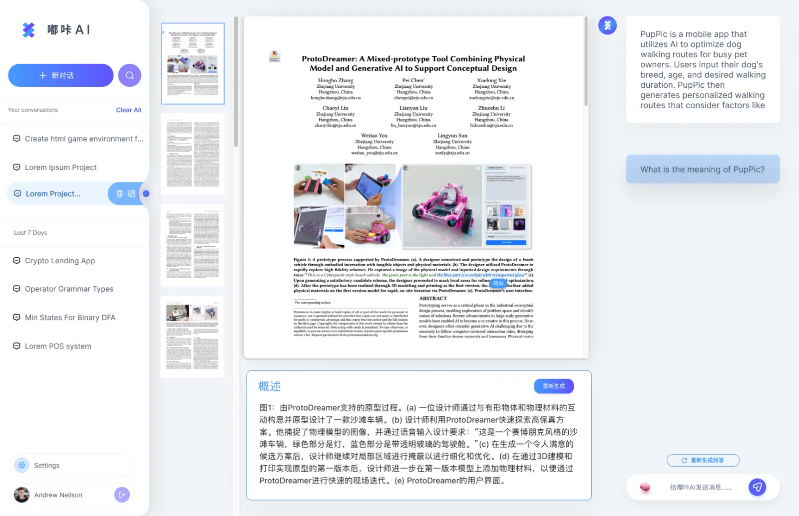
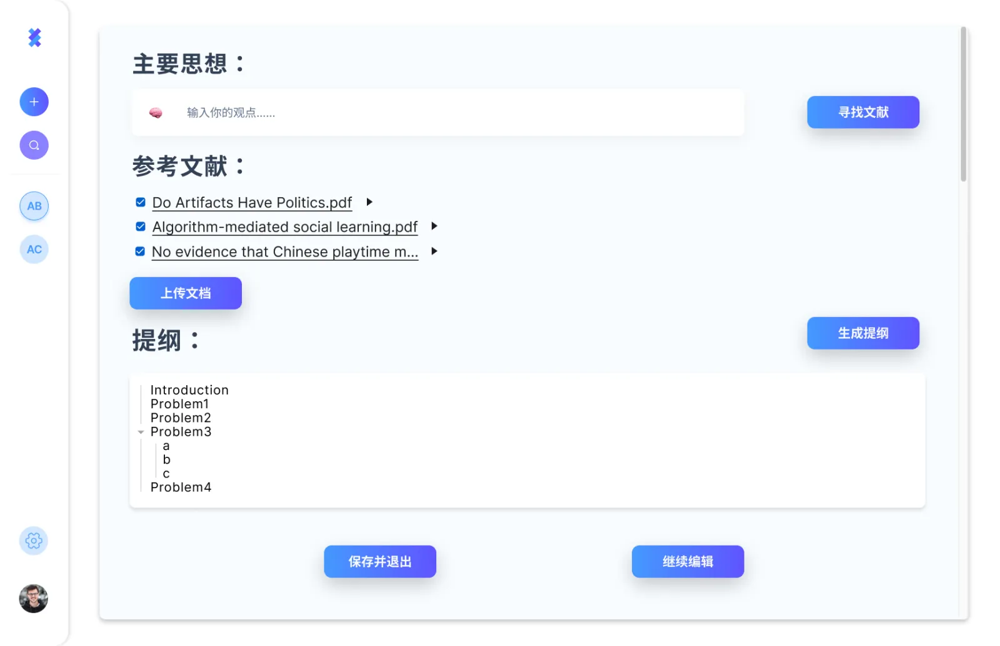
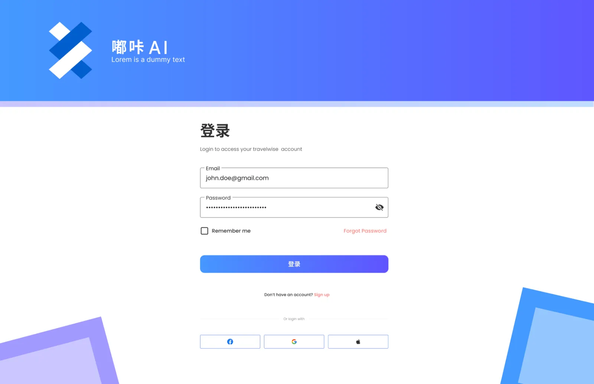
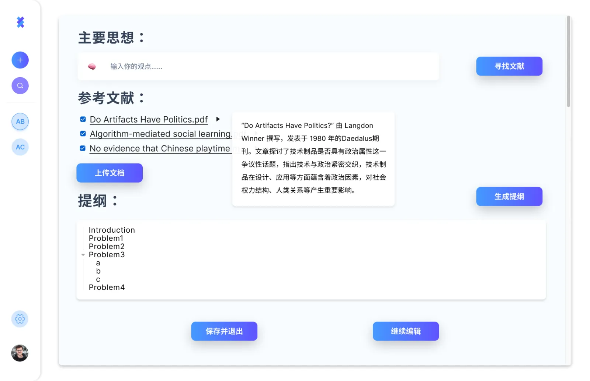

Conversation as Workspace
The interface keeps chat history, project context, and active prompts visible so users can return to previous learning threads.
03 AI Learning + Writing
An AI chat interface that supports learning conversations, academic writing, reference discovery, file history, and outline generation in one workspace.

01 Project Overview
The Figma project explores how a conversational AI product can support two adjacent study modes: learning through chat and writing through structured generation. The design connects onboarding, persistent conversation history, uploaded files, reference selection, and outline creation into a clear academic workflow.
The interface keeps chat history, project context, and active prompts visible so users can return to previous learning threads.
Instead of only generating text, the writing flow asks for a central idea, source materials, and references before producing an outline.
Login, get-started screens, file history, and primary CTAs are designed to reduce hesitation before users begin a learning or writing task.
02 Interface System
Users land on the product, log in, and enter a personal workspace.
The learning interface supports new chats, search, recent conversations, and persistent project memory.
The writing flow asks users to upload documents and add insights before generation.
Reference selection and outline generation help transform scattered ideas into editable academic structure.

03 Screen Collection


04 Takeaway
The case is less about adding a chatbot to a page and more about arranging the surrounding workflow: conversations, files, references, outlines, and editing states. The interface gives users a visible path from uncertainty to organized thinking.